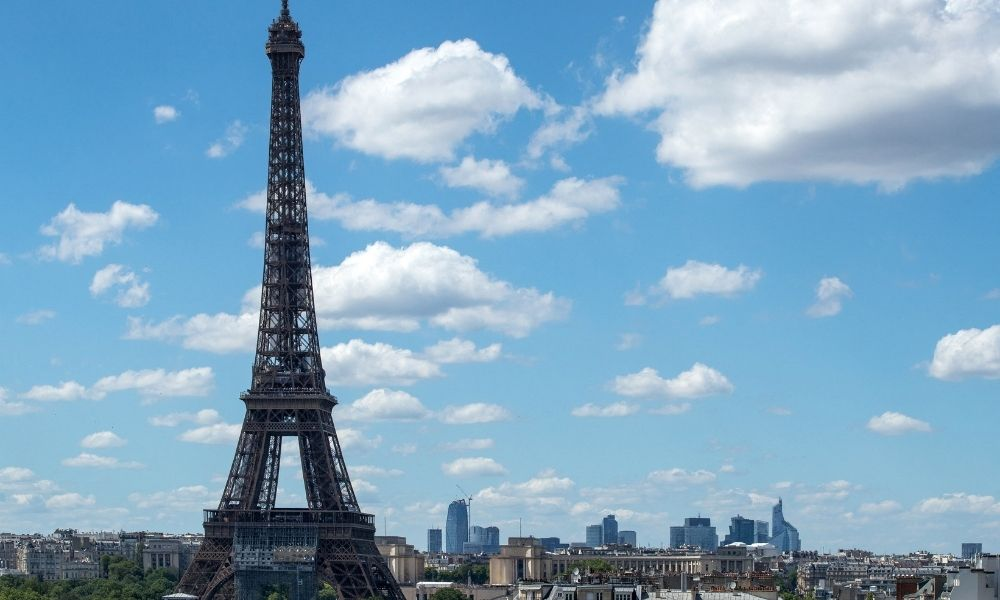
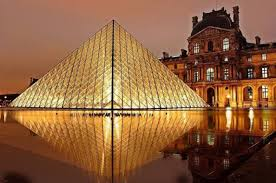
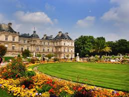

É incabível falar sobre os pontos turísticos da França sem mencionar a Torre Eiffel, erguida para marcar os 100 anos da Revolução Francesa, em 1889.
Símbolo mais emblemático da capital francesa, a torre tem mais de 325 metros de altura e milhares de toneladas de ferro.
Considerada obra-prima da engenharia do século XIX, a torre conta com quase 2.000 degraus que conduzem aos mais corajosos até o topo.
Dali, é possível contemplar vistas deslumbrantes de Paris e seus arredores.
Se você preferir, também pode desfrutar da torre com os pés firmes no chão. Faça como milhares de pessoas e sente-se à sombra da Torre Eiffel para um agradável piquenique romântico!
O Museu do Louvre é nada menos que o maior museu de arte do planeta.
O acervo surpreende: uma pessoa que dedique 30 segundos para cada obra demoraria mais de 200 dias para conhecer tudo!
São mais de 380 mil objetos em exposição, que oferecem um retrato das civilizações, desde o Antigo Egito. A coleção inclui obras mundialmente célebres, como a Mona Lisa, de Leonardo da Vinci.
Cada sala revela uma nova surpresa, uma nova história para ser descoberta. Sem dúvidas, o Louvre é mais do que um museu: é um símbolo da excelência artística e da criatividade humana.
Um dos pontos turísticos franceses mais famosos é o complexo dos Jardins de Luxemburgo, também situados em Paris.
O atrativo fica anexo ao Palácio de Luxemburgo e tem uma história que remonta ao século XVII. O local foi erguido por ordem de Maria de Médicis e reflete a elegância e o esplendor da época.
